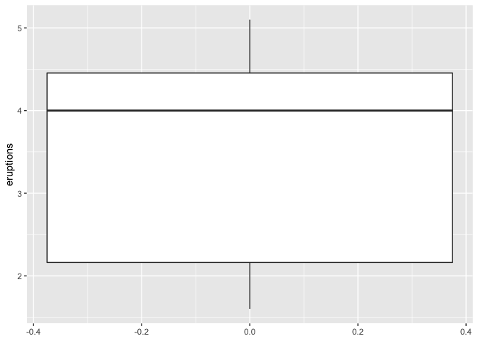
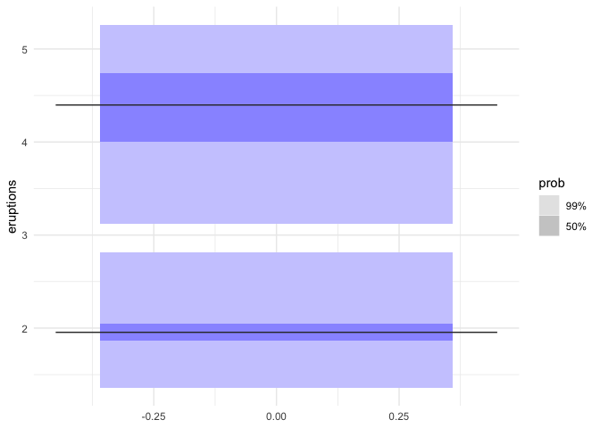
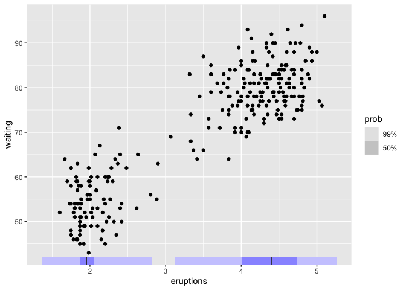
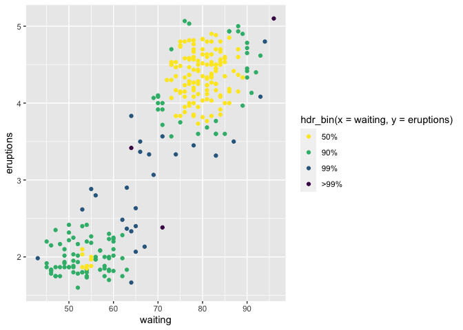

Package gghdr helps to visualize Highest Density Regions (HDR) in one and two dimensions. HDRs are useful in displaying multimodality in the distribution. This work draws inspiration from the the package hdrcde developed by Rob Hyndman and provide a framework for displaying HDRs under ggplot2 framework.
Installation
You could install the development version from Github using:
# install.packages("remotes")
remotes::install_github("Sayani07/gghdr")An overview of gghdr
There are several statistical methods to summarize a distribution by region of the sample space covering certain probability. For example, in a traditional boxplot, the central box bounded by the interquartile range represents 50% coverage and whiskers represent 99% coverage for large samples. The method of summarizing a distribution using highest density regions is useful for analysing multimodal distributions. We illustrate this by exploring the data set faithful which contains the waiting time and duration of eruptions for the old faithful geyser in the Yellowstone National Park, USA.
library(ggplot2)
ggplot(faithful, aes(y=eruptions)) + geom_boxplot()
We can use geom_hdr_boxplot to display the same variable. Along with displaying the 99% and 50% highest density regions, it also shows the local mode in each of the regions. This shows that eruption times are likely to be around 4.5 minutes or 2 minutes, but rarely for around 3 minutes. This insight was not apparent in the above boxplot.
library(gghdr)
library(ggplot2)
ggplot(faithful, aes(y = eruptions)) +
geom_hdr_boxplot(prob = c(.5, 0.99), fill = "blue") +
theme_minimal()
It can be interesting to supplement a scatterplot with marginal distributions of one or both variables to enhance insights into the relationship between the two variables. This is possible through geom_hdr_rug. This shows two clear clusters, one with shorter waiting times and shorter eruptions (around 2 minutes) and another with longer waiting times and longer eruptions (around 4.5 minutes). The geom_hdr_rug adds to this information by displaying the highest density region of eruption time covering 50% and 99%.
ggplot(faithful) +
geom_point(aes(x = eruptions, y = waiting)) +
geom_hdr_rug(aes(x = eruptions), prob = c(0.99, 0.5), fill = "blue")
The previous example can be extended to allow displaying the scatterplot with points coloured according to the bivariate highest density regions using hdr_bin.hdr_bin can also be mapped to only the x-axis or y-axis to show the marginal distribution of any one variable. This figure enriches the information in the scatterplot by emphasizing the highest bivariate density regions covering 50%, 90%, 99%, and more than 99% coverage.
ggplot(data = faithful, aes(x = waiting, y=eruptions)) +
geom_point(aes(colour = hdr_bin(x = waiting, y = eruptions))) +
scale_colour_viridis_d(direction = -1) 
You can read more about gghdr in the vignette.